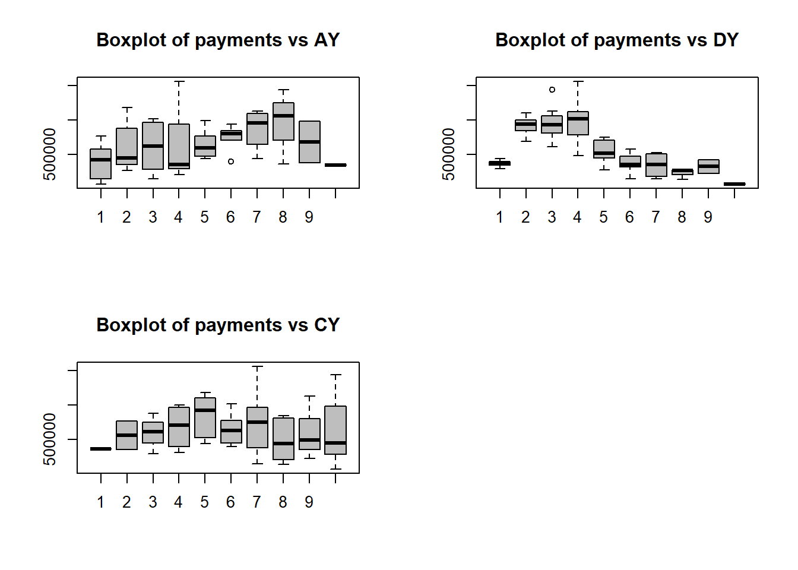
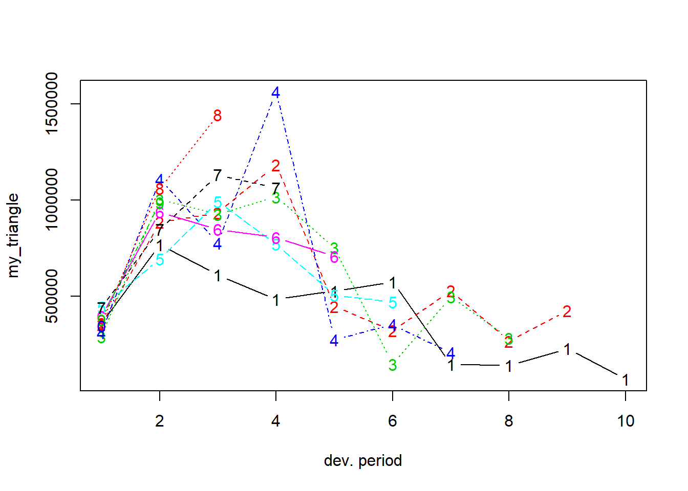
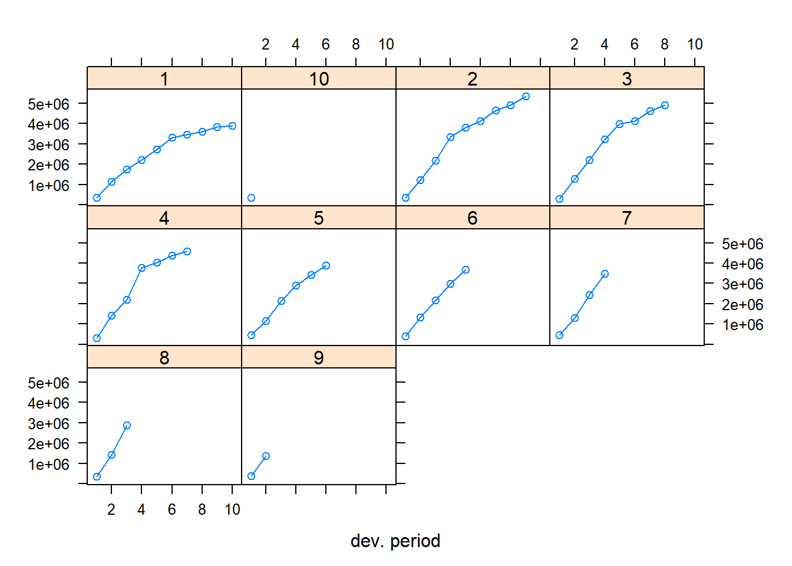
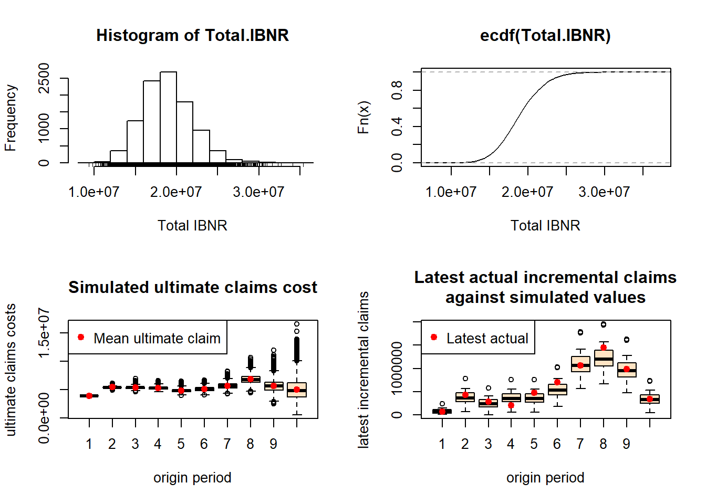

6 Claims reserving with ChainLadder and GLMs
6.1 Goals
You’ll focus on reserving analytics with run-off triangles, including the following steps:
- importing a run-off triangle
- visualizing the data in the triangle
- basic chain-ladder calculations: the Mack approach
- setting up a bootstrap analysis to simulate from the predictive distribution of the outstanding loss amount while incorporating parameter and process uncertainty.
6.2 Import a run-off triangle
6.2.1 Using scan
You can load a run-off triangle in many different ways. Here is a first strategy, using the scan() function in R.
Xij <- scan(n=55)
357848 766940 610542 482940 527326 574398 146342 139950 227229 67948
352118 884021 933894 1183289 445745 320996 527804 266172 425046
290507 1001799 926219 1016654 750816 146923 495992 280405
310608 1108250 776189 1562400 272482 352053 206286
443160 693190 991983 769488 504851 470639
396132 937085 847498 805037 705960
440832 847631 1131398 1063269
359480 1061648 1443370
376686 986608
344014Exercise:
- verify the structure of object
Xij. What happened?
You will now reshape the flat vector Xij into a data frame that can be used for claims reserving with GLMs.
n <- length(Xij)
TT <- trunc(sqrt(2*n))
# row.nrs
i <- rep(1:TT, TT:1)
# col.nrs
j <- sequence(TT:1)
# calendar.nrs
c <- i+j-1
# as.factor
i <- as.factor(i)
j <- as.factor(j)
c <- as.factor(c)
# combine into a data frame
my_triangle_data <- data.frame(Xij, i, j, c)Exercise:
- verify the structure of the resulting data frame
- inspect the first 10 rows using
head.
You now prepare some first visual inspections of the data stored in my_triangle_data.
par(mfrow = c(2, 2))
boxplot(Xij ~ i, col = "grey", main = "Boxplot of payments vs AY")
boxplot(Xij ~ j, col = "grey", main = "Boxplot of payments vs DY")
boxplot(Xij ~ c, col = "grey", main = "Boxplot of payments vs CY")
par(mfrow = c(1, 1))
6.2.2 Using the chainladder package
The ChainLadder package is a well-developed and highly useful package for claims reserving in R. Among others the package brings functions covering:
- Mack chain-ladder, Munich chain-ladder and bootstrap models
- General multivariate chain ladder-models
- Loss development factor fitting and Cape Cod models
- Generalized linear models
- One year claims development result functions
- Utility functions to:
- convert tables into triangles and triangles into tables
- convert cumulative into incremental and incremental into cumulative triangles
- visualise triangles.
You’ll now load the triangle introduced above with the ChainLadder package. Here is how this works.
path <- file.path("C:/Users/u0043788/Dropbox/Risk modelling course Ljubljana/Bookdown/data")
path.triangle <- file.path(path, "TaylorAshe.txt")
my_triangle_data_set <- read.table(path.triangle, header = TRUE, sep="\t")Using the as.triangle function from the ChainLadder package you can reshape the data frame into a ‘triangle’.
#install.packages("ChainLadder")
library(ChainLadder)## Registered S3 methods overwritten by 'ggplot2':
## method from
## [.quosures rlang
## c.quosures rlang
## print.quosures rlang## Registered S3 method overwritten by 'dplyr':
## method from
## as.data.frame.tbl_df tibble##
## Welcome to ChainLadder version 0.2.9
##
## Type vignette('ChainLadder', package='ChainLadder') to access
## the overall package documentation.
##
## See demo(package='ChainLadder') for a list of demos.
##
## More information is available on the ChainLadder project web-site:
## https://github.com/mages/ChainLadder
##
## To suppress this message use:
## suppressPackageStartupMessages(library(ChainLadder))# prepare triangle
my_triangle <- as.triangle(my_triangle_data_set, origin = "NumAY", dev = "NumDY", value = "Paym")
my_triangle## NumDY
## NumAY 1 2 3 4 5 6 7 8 9
## 1 357848 766940 610542 482940 527326 574398 146342 139950 227229
## 2 352118 884021 933894 1183289 445745 320996 527804 266172 425046
## 3 290507 1001799 926219 1016654 750816 146923 495992 280405 NA
## 4 310608 1108250 776189 1562400 272482 352053 206286 NA NA
## 5 443160 693190 991983 769488 504851 470639 NA NA NA
## 6 396132 937085 847498 805037 705960 NA NA NA NA
## 7 440832 847631 1131398 1063269 NA NA NA NA NA
## 8 359480 1061648 1443370 NA NA NA NA NA NA
## 9 376686 986608 NA NA NA NA NA NA NA
## 10 344014 NA NA NA NA NA NA NA NA
## NumDY
## NumAY 10
## 1 67948
## 2 NA
## 3 NA
## 4 NA
## 5 NA
## 6 NA
## 7 NA
## 8 NA
## 9 NA
## 10 NAExercise:
- interpret the arguments of the function
as.triangle - what is the structure of the R object
my_triangle?
Here is an illustration of some useful functions from the package. Can you figure out what they do?
my_triangle_cum <- incr2cum(my_triangle)
my_triangle_cum## NumDY
## NumAY 1 2 3 4 5 6 7 8
## 1 357848 1124788 1735330 2218270 2745596 3319994 3466336 3606286
## 2 352118 1236139 2170033 3353322 3799067 4120063 4647867 4914039
## 3 290507 1292306 2218525 3235179 3985995 4132918 4628910 4909315
## 4 310608 1418858 2195047 3757447 4029929 4381982 4588268 NA
## 5 443160 1136350 2128333 2897821 3402672 3873311 NA NA
## 6 396132 1333217 2180715 2985752 3691712 NA NA NA
## 7 440832 1288463 2419861 3483130 NA NA NA NA
## 8 359480 1421128 2864498 NA NA NA NA NA
## 9 376686 1363294 NA NA NA NA NA NA
## 10 344014 NA NA NA NA NA NA NA
## NumDY
## NumAY 9 10
## 1 3833515 3901463
## 2 5339085 NA
## 3 NA NA
## 4 NA NA
## 5 NA NA
## 6 NA NA
## 7 NA NA
## 8 NA NA
## 9 NA NA
## 10 NA NAplot(my_triangle)
plot(my_triangle_cum)
plot(my_triangle, lattice = TRUE)
plot(my_triangle_cum, lattice = TRUE)
getLatestCumulative(my_triangle_cum)## 1 2 3 4 5 6 7 8 9
## 3901463 5339085 4909315 4588268 3873311 3691712 3483130 2864498 1363294
## 10
## 344014
## attr(,"latestcol")
## 1 2 3 4 5 6 7 8 9 10
## 10 9 8 7 6 5 4 3 2 1
## attr(,"rowsname")
## [1] "NumAY"
## attr(,"colnames")
## [1] "10" "9" "8" "7" "6" "5" "4" "3" "2" "1"
## attr(,"colsname")
## [1] "NumDY"6.3 Mack’s Chain-Ladder calculations
The ChainLadder package can easily perform Mack’s calculations (see the lecture notes by Katrien for more details).
M <- MackChainLadder(my_triangle_cum, est.sigma = "Mack")
M## MackChainLadder(Triangle = my_triangle_cum, est.sigma = "Mack")
##
## Latest Dev.To.Date Ultimate IBNR Mack.S.E CV(IBNR)
## 1 3,901,463 1.0000 3,901,463 0 0 NaN
## 2 5,339,085 0.9826 5,433,719 94,634 75,535 0.798
## 3 4,909,315 0.9127 5,378,826 469,511 121,699 0.259
## 4 4,588,268 0.8661 5,297,906 709,638 133,549 0.188
## 5 3,873,311 0.7973 4,858,200 984,889 261,406 0.265
## 6 3,691,712 0.7223 5,111,171 1,419,459 411,010 0.290
## 7 3,483,130 0.6153 5,660,771 2,177,641 558,317 0.256
## 8 2,864,498 0.4222 6,784,799 3,920,301 875,328 0.223
## 9 1,363,294 0.2416 5,642,266 4,278,972 971,258 0.227
## 10 344,014 0.0692 4,969,825 4,625,811 1,363,155 0.295
##
## Totals
## Latest: 34,358,090.00
## Dev: 0.65
## Ultimate: 53,038,945.61
## IBNR: 18,680,855.61
## Mack.S.E 2,447,094.86
## CV(IBNR): 0.13# get development factors
M$f## [1] 3.490607 1.747333 1.457413 1.173852 1.103824 1.086269 1.053874
## [8] 1.076555 1.017725 1.000000# get the estimates for \sigma^2
M$sigma^2## [1] 160280.3275 37736.8550 41965.2130 15182.9027 13731.3239 8185.7716
## [7] 446.6166 1147.3660 446.6166# get the full triangle
M$FullTriangle## dev
## origin 1 2 3 4 5 6 7 8
## 1 357848 1124788 1735330 2218270 2745596 3319994 3466336 3606286
## 2 352118 1236139 2170033 3353322 3799067 4120063 4647867 4914039
## 3 290507 1292306 2218525 3235179 3985995 4132918 4628910 4909315
## 4 310608 1418858 2195047 3757447 4029929 4381982 4588268 4835458
## 5 443160 1136350 2128333 2897821 3402672 3873311 4207459 4434133
## 6 396132 1333217 2180715 2985752 3691712 4074999 4426546 4665023
## 7 440832 1288463 2419861 3483130 4088678 4513179 4902528 5166649
## 8 359480 1421128 2864498 4174756 4900545 5409337 5875997 6192562
## 9 376686 1363294 2382128 3471744 4075313 4498426 4886502 5149760
## 10 344014 1200818 2098228 3057984 3589620 3962307 4304132 4536015
## dev
## origin 9 10
## 1 3833515 3901463
## 2 5339085 5433719
## 3 5285148 5378826
## 4 5205637 5297906
## 5 4773589 4858200
## 6 5022155 5111171
## 7 5562182 5660771
## 8 6666635 6784799
## 9 5544000 5642266
## 10 4883270 4969825# get Mack SE
M$Mack.S.E## dev
## origin 1 2 3 4 5 6 7 8
## 1 0 0.0 0.0 0.0 0.0 0.0 0.0 0.0
## 2 0 0.0 0.0 0.0 0.0 0.0 0.0 0.0
## 3 0 0.0 0.0 0.0 0.0 0.0 0.0 0.0
## 4 0 0.0 0.0 0.0 0.0 0.0 0.0 52792.3
## 5 0 0.0 0.0 0.0 0.0 0.0 198502.3 215087.7
## 6 0 0.0 0.0 0.0 0.0 247204.5 337617.1 359529.7
## 7 0 0.0 0.0 0.0 250737.0 381475.0 468090.6 496372.2
## 8 0 0.0 0.0 378275.3 524308.8 648532.0 745375.5 787969.0
## 9 0 0.0 241429.5 489488.2 626722.3 739749.5 832421.5 878986.8
## 10 0 246656.5 486185.5 776148.3 940317.8 1066053.3 1175373.2 1239733.2
## dev
## origin 9 10
## 1 0.00 0.00
## 2 0.00 75535.04
## 3 94224.87 121698.56
## 4 109209.66 133548.85
## 5 247694.18 261406.45
## 6 397609.80 411009.70
## 7 543209.17 558316.86
## 8 855493.24 875327.51
## 9 951273.66 971257.81
## 10 1337625.66 1363154.91# split parameter and process risk
M$Mack.ProcessRisk## dev
## origin 1 2 3 4 5 6 7
## 1 0 0.0 0.0 0.0 0.0 0.0 0.0
## 2 0 0.0 0.0 0.0 0.0 0.0 0.0
## 3 0 0.0 0.0 0.0 0.0 0.0 0.0
## 4 0 0.0 0.0 0.0 0.0 0.0 0.0
## 5 0 0.0 0.0 0.0 0.0 0.0 178061.9
## 6 0 0.0 0.0 0.0 0.0 225149.0 305242.1
## 7 0 0.0 0.0 0.0 229965.3 347243.8 423348.5
## 8 0 0.0 0.0 346712.1 478565.2 588507.1 673019.3
## 9 0 0.0 226818.1 457429.1 583978.4 686644.2 770169.4
## 10 0 234816.3 462236.8 736127.5 890564.8 1007785.3 1109441.4
## dev
## origin 8 9 10
## 1 0.00 0.00 0.00
## 2 0.00 0.00 48831.59
## 3 0.00 75051.86 90524.39
## 4 45268.05 89011.23 102622.02
## 5 192596.65 219266.58 227879.86
## 6 324745.07 357178.99 366582.08
## 7 448603.17 489044.92 500202.46
## 8 711125.36 770192.15 785740.55
## 9 813005.07 878613.76 895570.40
## 10 1170033.59 1261669.94 1284881.67M$Mack.ParameterRisk## dev
## origin 1 2 3 4 5 6 7
## 1 0 0.00 0.00 0.0 0.00 0.0 0.00
## 2 0 0.00 0.00 0.0 0.00 0.0 0.00
## 3 0 0.00 0.00 0.0 0.00 0.0 0.00
## 4 0 0.00 0.00 0.0 0.00 0.0 0.00
## 5 0 0.00 0.00 0.0 0.00 0.0 87733.28
## 6 0 0.00 0.00 0.0 0.00 102068.4 144265.72
## 7 0 0.00 0.00 0.0 99925.17 157939.6 199711.92
## 8 0 0.00 0.00 151271.1 214184.84 272494.2 320358.72
## 9 0 0.00 82714.94 174233.5 227486.40 275225.6 315855.40
## 10 0 75503.24 150709.93 246013.0 301814.19 347618.2 388126.15
## dev
## origin 8 9 10
## 1 0.00 0.00 0.00
## 2 0.00 0.00 57628.28
## 3 0.00 56969.68 81338.03
## 4 27163.04 63275.20 85463.55
## 5 95756.27 115215.35 128078.49
## 6 154279.84 174690.36 185867.04
## 7 212462.98 236455.63 248022.60
## 8 339405.23 372387.88 385759.04
## 9 334126.58 364636.04 375892.78
## 10 409829.10 444332.52 455269.61sqrt(M$Mack.ProcessRisk^2+M$Mack.ParameterRisk^2)## dev
## origin 1 2 3 4 5 6 7 8
## 1 0 0.0 0.0 0.0 0.0 0.0 0.0 0.0
## 2 0 0.0 0.0 0.0 0.0 0.0 0.0 0.0
## 3 0 0.0 0.0 0.0 0.0 0.0 0.0 0.0
## 4 0 0.0 0.0 0.0 0.0 0.0 0.0 52792.3
## 5 0 0.0 0.0 0.0 0.0 0.0 198502.3 215087.7
## 6 0 0.0 0.0 0.0 0.0 247204.5 337617.1 359529.7
## 7 0 0.0 0.0 0.0 250737.0 381475.0 468090.6 496372.2
## 8 0 0.0 0.0 378275.3 524308.8 648532.0 745375.5 787969.0
## 9 0 0.0 241429.5 489488.2 626722.3 739749.5 832421.5 878986.8
## 10 0 246656.5 486185.5 776148.3 940317.8 1066053.3 1175373.2 1239733.2
## dev
## origin 9 10
## 1 0.00 0.00
## 2 0.00 75535.04
## 3 94224.87 121698.56
## 4 109209.66 133548.85
## 5 247694.18 261406.45
## 6 397609.80 411009.70
## 7 543209.17 558316.86
## 8 855493.24 875327.51
## 9 951273.66 971257.81
## 10 1337625.66 1363154.91Again, the package can nicely visualize the results.
plot(M)
plot(M,lattice=TRUE)
Exercise:
- interpret the plots. What do you see?
6.4 GLM analysis of a run-off triangle
Next to Mack’s chain ladder calculation, you can also work with the data frame my_triangle_data and build a (overdispersed) Poisson GLM for these data.
str(my_triangle_data)## 'data.frame': 55 obs. of 4 variables:
## $ Xij: num 357848 766940 610542 482940 527326 ...
## $ i : Factor w/ 10 levels "1","2","3","4",..: 1 1 1 1 1 1 1 1 1 1 ...
## $ j : Factor w/ 10 levels "1","2","3","4",..: 1 2 3 4 5 6 7 8 9 10 ...
## $ c : Factor w/ 10 levels "1","2","3","4",..: 1 2 3 4 5 6 7 8 9 10 ...# Poisson GLM of Xij versus i+j
poi_glm <- glm(Xij ~ i + j, poisson(link=log), data = my_triangle_data)
summary(poi_glm)##
## Call:
## glm(formula = Xij ~ i + j, family = poisson(link = log), data = my_triangle_data)
##
## Deviance Residuals:
## Min 1Q Median 3Q Max
## -464.88 -123.73 -21.75 116.21 494.35
##
## Coefficients:
## Estimate Std. Error z value Pr(>|z|)
## (Intercept) 12.5064047 0.0007540 16587.372 < 2e-16 ***
## i2 0.3312722 0.0006694 494.848 < 2e-16 ***
## i3 0.3211186 0.0006877 466.963 < 2e-16 ***
## i4 0.3059600 0.0007008 436.570 < 2e-16 ***
## i5 0.2193163 0.0007324 299.461 < 2e-16 ***
## i6 0.2700770 0.0007445 362.755 < 2e-16 ***
## i7 0.3722084 0.0007606 489.344 < 2e-16 ***
## i8 0.5533331 0.0008133 680.377 < 2e-16 ***
## i9 0.3689342 0.0010429 353.772 < 2e-16 ***
## i10 0.2420330 0.0018642 129.830 < 2e-16 ***
## j2 0.9125263 0.0006490 1406.042 < 2e-16 ***
## j3 0.9588306 0.0006652 1441.374 < 2e-16 ***
## j4 1.0259970 0.0006840 1499.927 < 2e-16 ***
## j5 0.4352762 0.0008019 542.814 < 2e-16 ***
## j6 0.0800565 0.0009364 85.492 < 2e-16 ***
## j7 -0.0063815 0.0010390 -6.142 8.14e-10 ***
## j8 -0.3944522 0.0013529 -291.560 < 2e-16 ***
## j9 0.0093782 0.0013963 6.716 1.86e-11 ***
## j10 -1.3799067 0.0039097 -352.946 < 2e-16 ***
## ---
## Signif. codes: 0 '***' 0.001 '**' 0.01 '*' 0.05 '.' 0.1 ' ' 1
##
## (Dispersion parameter for poisson family taken to be 1)
##
## Null deviance: 10699464 on 54 degrees of freedom
## Residual deviance: 1903014 on 36 degrees of freedom
## AIC: 1903877
##
## Number of Fisher Scoring iterations: 4# get coefficients of this regression model
coef(poi_glm)## (Intercept) i2 i3 i4 i5
## 12.506404677 0.331272153 0.321118578 0.305960003 0.219316314
## i6 i7 i8 i9 i10
## 0.270077015 0.372208424 0.553333059 0.368934194 0.242032956
## j2 j3 j4 j5 j6
## 0.912526274 0.958830628 1.025997003 0.435276183 0.080056547
## j7 j8 j9 j10
## -0.006381469 -0.394452205 0.009378211 -1.379906692Exercise:
- write down the full model specification of this GLM.
Using the coefficients stored in poi_glm you want to extract fitted values for upper and lower triangle.
# apply inverse link function
coefs <- exp(as.numeric(coef(poi_glm)))
alpha <- c(1, coefs[2:TT])*coefs[1]
alpha## [1] 270061.4 376125.0 372325.3 366724.0 336287.3 353798.1 391841.7
## [8] 469647.5 390560.8 344014.0length(alpha)## [1] 10beta <- c(1, coefs[(TT+1):(2*TT-1)])
beta## [1] 1.0000000 2.4906065 2.6086442 2.7898756 1.5453898 1.0833483 0.9936388
## [8] 0.6740492 1.0094223 0.2516020length(beta)## [1] 10# fitted values, original scale
orig_fits <- alpha %*% t(beta)
dim(orig_fits)## [1] 10 10str(orig_fits)## num [1:10, 1:10] 270061 376125 372325 366724 336287 ...orig_fits## [,1] [,2] [,3] [,4] [,5] [,6] [,7]
## [1,] 270061.4 672616.7 704494.1 753437.8 417350.2 292570.6 268343.5
## [2,] 376125.0 936779.4 981176.3 1049342.0 581259.8 407474.4 373732.4
## [3,] 372325.3 927315.9 971264.3 1038741.3 575387.7 403358.0 369956.9
## [4,] 366724.0 913365.1 956652.3 1023114.2 566731.5 397289.8 364391.2
## [5,] 336287.3 837559.2 877253.8 938199.6 519694.9 364316.2 334148.1
## [6,] 353798.1 881171.9 922933.4 987052.7 546756.0 383286.6 351547.5
## [7,] 391841.7 975923.4 1022175.5 1093189.5 605548.1 424501.0 389349.1
## [8,] 469647.5 1169707.2 1225143.3 1310258.2 725788.5 508791.9 466660.0
## [9,] 390560.8 972733.2 1018834.1 1089616.0 603568.6 423113.4 388076.4
## [10,] 344014.0 856803.5 897410.1 959756.3 531635.7 372687.0 341825.7
## [,8] [,9] [,10]
## [1,] 182034.7 272606.0 67948.00
## [2,] 253526.8 379669.0 94633.81
## [3,] 250965.6 375833.5 93677.80
## [4,] 247190.0 370179.3 92268.49
## [5,] 226674.1 339455.9 84610.55
## [6,] 238477.3 357131.7 89016.32
## [7,] 264120.5 395533.7 98588.16
## [8,] 316565.5 474072.7 118164.27
## [9,] 263257.2 394240.8 98265.88
## [10,] 231882.4 347255.4 86554.62Of course, you can also extract fitted.values from the GLM stored in poi_glm. What is the difference with our own coded approach?
fitted.values(poi_glm)## 1 2 3 4 5 6 7
## 270061.4 672616.7 704494.1 753437.8 417350.2 292570.6 268343.5
## 8 9 10 11 12 13 14
## 182034.7 272606.0 67948.0 376125.0 936779.4 981176.3 1049342.0
## 15 16 17 18 19 20 21
## 581259.8 407474.4 373732.4 253526.8 379669.0 372325.3 927315.9
## 22 23 24 25 26 27 28
## 971264.3 1038741.3 575387.7 403358.0 369956.9 250965.6 366724.0
## 29 30 31 32 33 34 35
## 913365.1 956652.3 1023114.2 566731.5 397289.8 364391.2 336287.3
## 36 37 38 39 40 41 42
## 837559.2 877253.8 938199.6 519694.9 364316.2 353798.1 881171.9
## 43 44 45 46 47 48 49
## 922933.4 987052.7 546756.0 391841.7 975923.4 1022175.5 1093189.5
## 50 51 52 53 54 55
## 469647.5 1169707.2 1225143.3 390560.8 972733.2 344014.0# extract future
future <- row(orig_fits) + col(orig_fits) - 1 > TT
future## [,1] [,2] [,3] [,4] [,5] [,6] [,7] [,8] [,9] [,10]
## [1,] FALSE FALSE FALSE FALSE FALSE FALSE FALSE FALSE FALSE FALSE
## [2,] FALSE FALSE FALSE FALSE FALSE FALSE FALSE FALSE FALSE TRUE
## [3,] FALSE FALSE FALSE FALSE FALSE FALSE FALSE FALSE TRUE TRUE
## [4,] FALSE FALSE FALSE FALSE FALSE FALSE FALSE TRUE TRUE TRUE
## [5,] FALSE FALSE FALSE FALSE FALSE FALSE TRUE TRUE TRUE TRUE
## [6,] FALSE FALSE FALSE FALSE FALSE TRUE TRUE TRUE TRUE TRUE
## [7,] FALSE FALSE FALSE FALSE TRUE TRUE TRUE TRUE TRUE TRUE
## [8,] FALSE FALSE FALSE TRUE TRUE TRUE TRUE TRUE TRUE TRUE
## [9,] FALSE FALSE TRUE TRUE TRUE TRUE TRUE TRUE TRUE TRUE
## [10,] FALSE TRUE TRUE TRUE TRUE TRUE TRUE TRUE TRUE TRUETo conclude, you calculate the point estimates of the reserves (in total and per row) as obtained from the poi_glm fit.
# compare reserves with CL reserves
orig_reserve_tot <- sum(orig_fits[future])
orig_reserve_row <- numeric(TT-1)
for(i in 2:TT){
orig_reserve_row[i-1] <- sum(orig_fits[i, (TT-i+2):TT])
}
point_est_glm <- data.frame(2:TT, orig_reserve_row)
names(point_est_glm) <- c("row", "reserve")
orig_reserve_tot## [1] 18680856point_est_glm## row reserve
## 1 2 94633.81
## 2 3 469511.29
## 3 4 709637.82
## 4 5 984888.64
## 5 6 1419459.46
## 6 7 2177640.62
## 7 8 3920301.01
## 8 9 4278972.26
## 9 10 4625810.69Exercise:
- compare the point estimates with the results stored in object
M. What do you conclude? - now redo the analysis, use
family = quasipoissonto do overdispersed Poisson instead of regular Poisson regression.
6.5 Bootstrap analysis
Starting from the results of an overdispersed Poisson GLM you can now code a bootstrap analysis to simulate from the predictive distribution of the outstanding reserve. Here is the preparatory work.
# OD Poisson GLM of Xij versus i+j
poi_glm_od <- glm(Xij ~ i + j, quasipoisson(link=log), data = my_triangle_data)
summary(poi_glm_od)##
## Call:
## glm(formula = Xij ~ i + j, family = quasipoisson(link = log),
## data = my_triangle_data)
##
## Deviance Residuals:
## Min 1Q Median 3Q Max
## -464.88 -123.73 -21.75 116.21 494.35
##
## Coefficients:
## Estimate Std. Error t value Pr(>|t|)
## (Intercept) 12.506405 0.172924 72.323 < 2e-16 ***
## i2 0.331272 0.153537 2.158 0.03771 *
## i3 0.321119 0.157719 2.036 0.04916 *
## i4 0.305960 0.160736 1.903 0.06499 .
## i5 0.219316 0.167970 1.306 0.19994
## i6 0.270077 0.170756 1.582 0.12247
## i7 0.372208 0.174451 2.134 0.03976 *
## i8 0.553333 0.186525 2.967 0.00532 **
## i9 0.368934 0.239181 1.542 0.13170
## i10 0.242033 0.427562 0.566 0.57485
## j2 0.912526 0.148850 6.131 4.65e-07 ***
## j3 0.958831 0.152569 6.285 2.90e-07 ***
## j4 1.025997 0.156883 6.540 1.33e-07 ***
## j5 0.435276 0.183914 2.367 0.02344 *
## j6 0.080057 0.214770 0.373 0.71152
## j7 -0.006381 0.238290 -0.027 0.97878
## j8 -0.394452 0.310289 -1.271 0.21180
## j9 0.009378 0.320249 0.029 0.97680
## j10 -1.379907 0.896690 -1.539 0.13258
## ---
## Signif. codes: 0 '***' 0.001 '**' 0.01 '*' 0.05 '.' 0.1 ' ' 1
##
## (Dispersion parameter for quasipoisson family taken to be 52601.93)
##
## Null deviance: 10699464 on 54 degrees of freedom
## Residual deviance: 1903014 on 36 degrees of freedom
## AIC: NA
##
## Number of Fisher Scoring iterations: 4# extract Pearson residuals
Prs.resid <- (my_triangle_data$Xij - fitted(poi_glm_od))/sqrt(fitted(poi_glm_od))
# get estimate dispersion parameter
n## [1] 55p <- 2*TT-1
p## [1] 19phi.P <- sum(Prs.resid^2)/(n-p)
phi.P## [1] 52601.36# adjust the residuals for bias in the same way as scale parameter
Adj.Prs.resid <- Prs.resid*sqrt(n/(n-p))And here starts the bootstrap loop, see Katrien’s lecture notes for explanation and schematic overview.
# initialize the random number generator
set.seed(6345789)
# i and j as factor variables
i <- rep(1:TT, TT:1); i <- as.factor(i)
j <- sequence(TT:1); j <- as.factor(j)
# run the bootstrap loop many times, eg 10000 times
nBoot <- 10000
payments <- numeric(nBoot)
for(boots in 1:nBoot){ ## start of the bootstrap loop
# Step 1: resample from the adjusted residuals, with replacement
Ps.Xij <- sample(Adj.Prs.resid, n, replace=TRUE)
# Step 2: using this set of residuals and the estimated values of \hat{\mu_{ij}}
# create a new suitable pseudo-history
Ps.Xij <- Ps.Xij*sqrt(fitted(poi_glm_od))+fitted(poi_glm_od)
Ps.Xij <- pmax(Ps.Xij, 0)
# Step 3: from this history, estimate \alpha_i, beta_j
Ps.CL <- glm(Ps.Xij ~ i + j, quasipoisson)
coefs <- exp(as.numeric(coef(Ps.CL)))
Ps.alpha <- c(1, coefs[2:TT])*coefs[1]
Ps.beta <- c(1, coefs[(TT+1):(2*TT-1)])
# Step 4: compute fitted values, use sum of future part as an estimate of the reserve
Ps.fits <- Ps.alpha%*%t(Ps.beta)
Ps.reserve <- sum(Ps.fits[future])
# Step 5:
Ps.totpayments <- phi.P*rpois(1, Ps.reserve/phi.P)
# Step 6:
payments[boots] <- Ps.totpayments
}
min(payments)## [1] 7416792max(payments)## [1] 31981628You extract useful summaries from the results stored in payments as follows.
quantile(payments, c(0.5, 0.75, 0.9, 0.95, 0.99), na.rm = TRUE)## 50% 75% 90% 95% 99%
## 18673483 20672335 22671187 23986221 26826694mean(payments)## [1] 18848278sd(payments)## [1] 2968997And plots
d <- data.frame(payments)
library(ggplot2)
ggplot(data=d, aes(payments)) +
geom_histogram(col = "black", fill = "blue", alpha = 0.2) + theme_bw() +
labs(title = "Histogram for Bootstrap Reserves", x="Reserves", y="Count") ## `stat_bin()` using `bins = 30`. Pick better value with `binwidth`.
The ChainLadder package also has useful functions to set up bootstrap simulations.
set.seed(1)
B <- BootChainLadder(GenIns, R = 10000, process.distr = "od.pois")
B## BootChainLadder(Triangle = GenIns, R = 10000, process.distr = "od.pois")
##
## Latest Mean Ultimate Mean IBNR IBNR.S.E IBNR 75% IBNR 95%
## 1 3,901,463 3,901,463 0 0 0 0
## 2 5,339,085 5,435,471 96,386 113,603 149,138 312,621
## 3 4,909,315 5,380,702 471,387 217,453 598,149 864,988
## 4 4,588,268 5,305,145 716,877 261,068 876,808 1,179,647
## 5 3,873,311 4,864,352 991,041 307,441 1,179,230 1,542,424
## 6 3,691,712 5,126,756 1,435,044 380,790 1,673,438 2,107,963
## 7 3,483,130 5,673,303 2,190,173 497,466 2,509,815 3,058,627
## 8 2,864,498 6,815,226 3,950,728 796,044 4,445,624 5,355,080
## 9 1,363,294 5,684,146 4,320,852 1,064,740 4,952,187 6,209,475
## 10 344,014 5,043,687 4,699,673 2,018,504 5,899,153 8,156,800
##
## Totals
## Latest: 34,358,090
## Mean Ultimate: 53,230,252
## Mean IBNR: 18,872,162
## IBNR.S.E 3,001,662
## Total IBNR 75%: 20,761,090
## Total IBNR 95%: 24,064,106plot(B)
# some attributes o
B$Triangle## dev
## origin 1 2 3 4 5 6 7 8
## 1 357848 1124788 1735330 2218270 2745596 3319994 3466336 3606286
## 2 352118 1236139 2170033 3353322 3799067 4120063 4647867 4914039
## 3 290507 1292306 2218525 3235179 3985995 4132918 4628910 4909315
## 4 310608 1418858 2195047 3757447 4029929 4381982 4588268 NA
## 5 443160 1136350 2128333 2897821 3402672 3873311 NA NA
## 6 396132 1333217 2180715 2985752 3691712 NA NA NA
## 7 440832 1288463 2419861 3483130 NA NA NA NA
## 8 359480 1421128 2864498 NA NA NA NA NA
## 9 376686 1363294 NA NA NA NA NA NA
## 10 344014 NA NA NA NA NA NA NA
## dev
## origin 9 10
## 1 3833515 3901463
## 2 5339085 NA
## 3 NA NA
## 4 NA NA
## 5 NA NA
## 6 NA NA
## 7 NA NA
## 8 NA NA
## 9 NA NA
## 10 NA NAB$f## [1] 3.490607 1.747333 1.457413 1.173852 1.103824 1.086269 1.053874
## [8] 1.076555 1.017725 1.000000B$IBNR.Totals[1:10]## [1] 21398909 17870368 17597508 18428981 19512320 19606687 15880725
## [8] 22244763 19325943 17354310